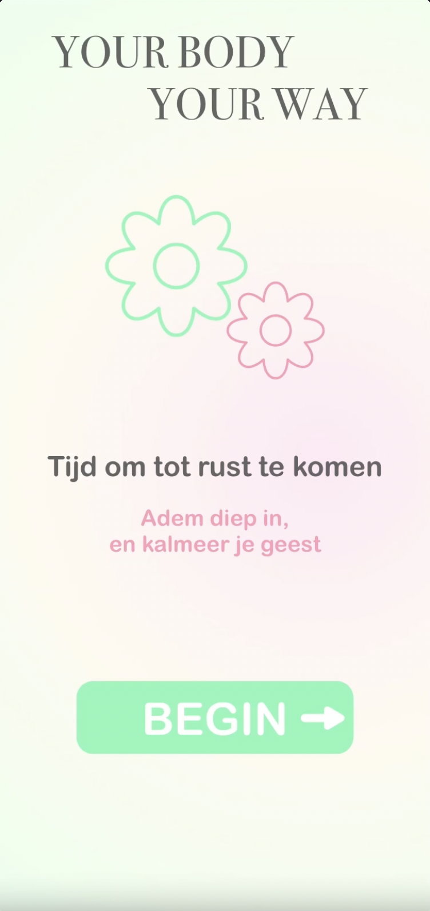
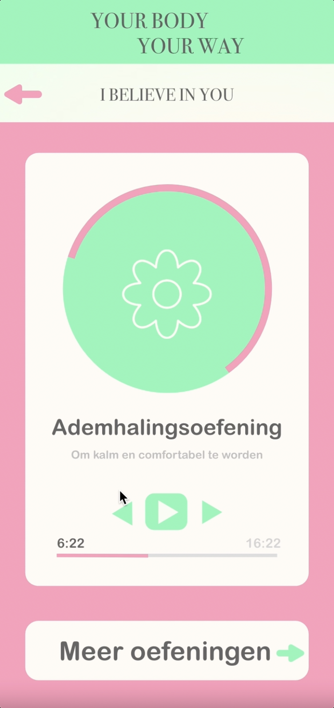

WEBSITES/APPS
De Bibliotheek Gemeente Amsterdam
Voor een opdracht van de Gemeente Amsterdam, heb ik een ontwerp gemaakt voor een online bibliotheek, voor middelbare scholieren. Het ontwerp is gemaakt voor op een iPad. Dit zijn een aantal verschillende schermen, om een idee te krijgen van het ontwerp.

Your Body Your Way
Voor een vrij project, heb ik een app ontworpen voor mensen die stress of angsten hebben, en op zoek zijn naar rust. De app bevat meerdere mogelijkheden, zoals ademhalingsoefeningen, yoga en pilates sessies en het bijhouden van een dagboek. Dit zijn een aantal verschillende schermen, om een idee te krijgen van het ontwerp.
 Say Cheese Fotochallenge
Voor een project voor internationale studenten in Amsterdam, heb ik een app ontworpen, doormiddel van HTML, CSS en JavaScript. Deze studenten willen op een creatieve manier de stad leren kennen, en mooie plekken ontdekken. Dit zijn een aantal verschillende schermen, om een idee te krijgen van het ontwerp.

MyJewellery Namaak
Doormiddel van HTML, CSS en JavaScript, heb ik de website van MyJewellery nagemaakt. Het ontwerp is gemaakt voor een iPhone. Dit zijn een aantal verschillende schermen, om een idee te krijgen van het ontwerp.